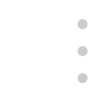

<div class="Article">
  <div class="Article__Container">
    <div class="Article__Filter">
      <div>
        <span><span></span>全部</span>
        <span><span></span>追蹤</span>
      </div>
      <div>
        <span></span>
        文章排序依
        <div >
          <i class="fa fa-fire"></i>
          <span>熱門</span>
          <i class="fa fa-caret-down"></i>
        </div>
      </div>
    </div>
    <!-- 首頁圖 -->
    
    <!-- 內容文章 -->
    <div>
      <div class="Article__Cloum" 
      (click)="this.$overlay.closeArticle()">
        <div>
          <div>
            <span></span>
            <span> c.board_name </span>
            <span>．</span>
            <span> c.board_class </span>
            <span>．</span>
            <span> c.last_update </span>
          </div>
          <div> c.board_title </div>
          <div>更#，大家回覆好熱烈身為妹妹的我表示感謝，等我我會一一回覆的（ ´Д`）y━･~</div>
          <div class="Article__Respond">
            
            <span> c.board_nuse </span>
            
            <span>339</span>
            
            <span>25</span>
            <i class="fa fa-bookmark"></i>
            <div>收藏</div>
          </div>
        </div>
        <div>
          
          <div class="img"></div>
        </div>
      </div>
    </div>
    <div>
      <div class="Article__Pages">
        <a class="btn btn-info mb-4 " href=""> page_num </a>
        <a class="btn btn-outline-info mb-4 " href=""> page_num </a>
      </div>
    </div>
  </div>